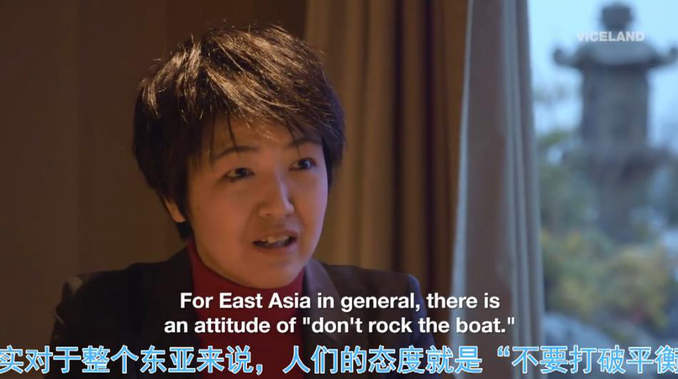
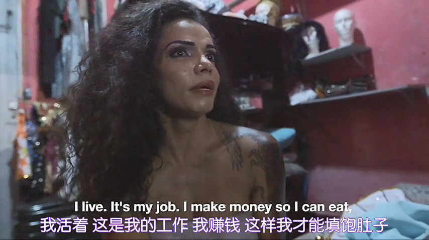
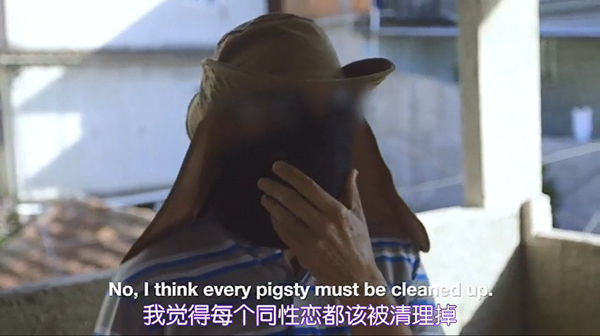
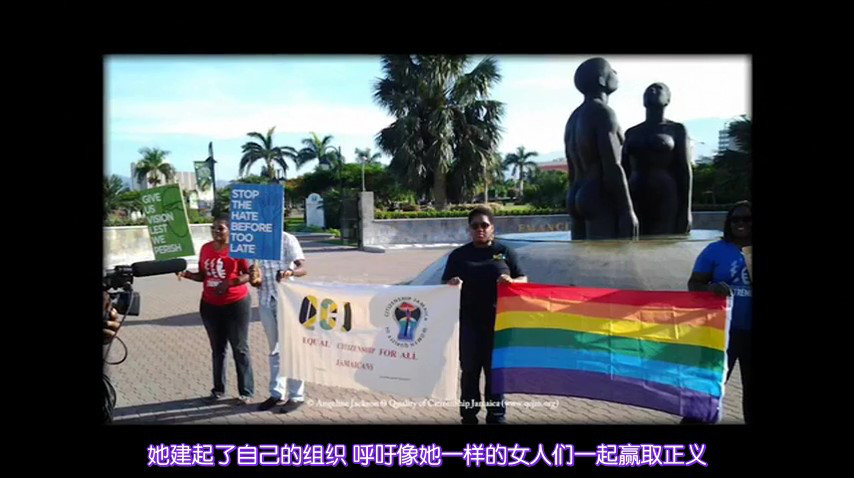
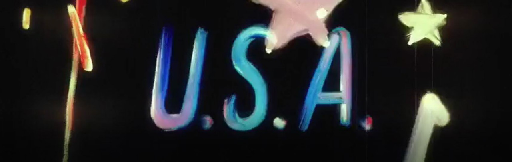
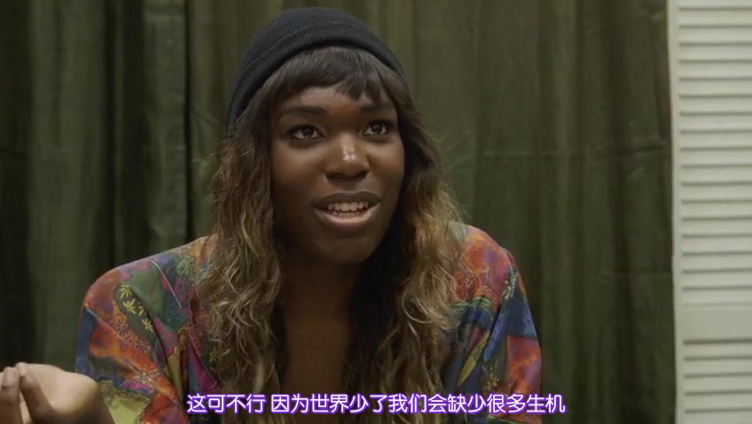

冒刺影院 | 《同行》
简介
Ellen Page 和她的好友 Lan Daniel 在这部纪录片里和观众一起探索世界各地的 LGBTQ 文化。
第一季共四集，分别去到亚洲的日本、南美洲的巴西、非洲的牙买加和北美洲的美国。
日本
日本有着对 LGBTQ 最友好的亚文化，亚洲最大的同志酒吧街、盛行的腐女漫画、流行的易装文化、可以凭借综艺走红的同志个体，它似乎正在成为一片 LGBTQ 人士的梦幻乐土。
但与之矛盾的是依然不敢在公开场合牵手的律师夫夫和匿名的形婚者。采访在这种社会下生活的 LGBTQ 及其相关人士，还有如首位出柜并争取同志权益的女议员和举行同性婚礼的佛教住持，多方面地构建出 LGBTQ 人士在日本这样一个独特的东亚保守国家中面临的矛盾和困境。

巴西
巴西是南半球第一个允许同性结婚的国家，更拥有全球最负盛名的嘉年华游行，但同时也是全球最大规模的天主教徒聚集地。这种冲突正是巴西 LGBT 谋杀率高居全球之首的主要原因。嘉年华是一场极其盛大的表演，给人一种所有人都会被接受的错觉，但在此之外却是一个完全不一样的世界--跨性别者在嘉年华表演完后就被恐同者谋杀，男同性恋者谋杀案屡禁不止。

借宗教之名行恶是巴西 LGBT 群体受害的主要原因，政府对于这种恶行采取宽容态度又进一步将这一群体的境地推向绝望。而女同性恋者在这个男权社会之中显得更加无助，她们甚至曾经遭遇过一场“奸改”浪潮--男人强奸女同性恋来“治好”性倾向。变形人群则无一例外地需要从事性工作来维持变性的费用。
牙买加
2006年，《时代周刊》提出牙买加或许是这个地球上最恐同的地方，人权组织的报告也证实了牙买加一半的 LGBT 群体仍然是暴力的受害者。受教育程度的低下和经济的低迷，让普遍大众的文化程度仍然处于一个相当低的水平。

在牙买加盛行的舞厅文化也让“同性恋恐惧症”蔓延，宗教狂热分子也声称因为教义和上帝的指示而去盲目伤害他人。同性恋者甚至只能到处流浪，躲避迫害。在这样的情况，仍然有一位女同性恋活动家在这里努力建起了组织，本集中也通过采访了解了她的故事。

美国

已经将同性婚姻纳入宪法保护范围之内的美国，看似到达了胜利的彼岸，但宗教和政治却在更深层次上影响阻碍着 LGBT 的发展。

值得注意的是，美国在一个更广的维度将同志运动推向一个新的高度，超出了政治的领域，讲述如何去创造一个更大的家庭，如何创建一个属于自己的社区，人们如何聚集起来给彼此力量，这是同志运动在新的时代的一个新定义。
活动流程
1. 纪录片放映--第 1、2 集（80min）
2. 中场休息（10~20min）
3. 纪录片放映——第 3、4 集（80min）
4. 观后感想交流：关于纪录片中的社会现象、人物遭遇和采访观点你有什么看法吗？希望大家碰撞思想、畅所欲言~
活动安排
•时间：2019.7.6 星期六 13: 30
•地点：公众号后台发送“幸福在哪里”即可获得
•收费标准：学生 10 RMB，工作党 15 RMB，空降 20 RMB。
活动报名
•活动报名链接：
https://www.hdb.com/party/rozpa.html
•报名链接可点击阅读原文。
•报名费请支付宝转账。
•注意： 活动报名和支付宝转账都完成了才算报名成功哦~
•瓜瓜的支付宝：